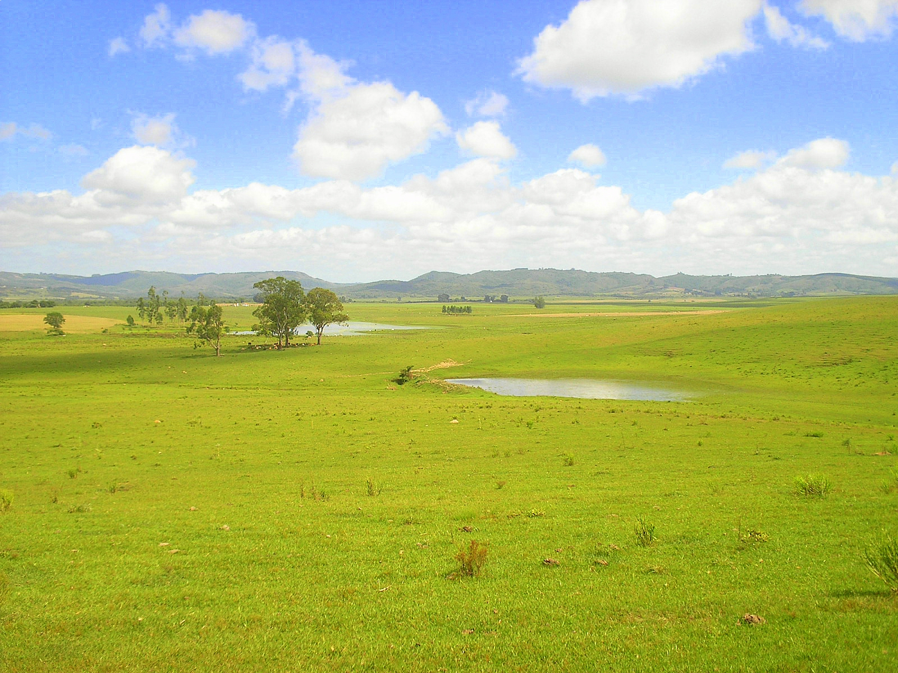
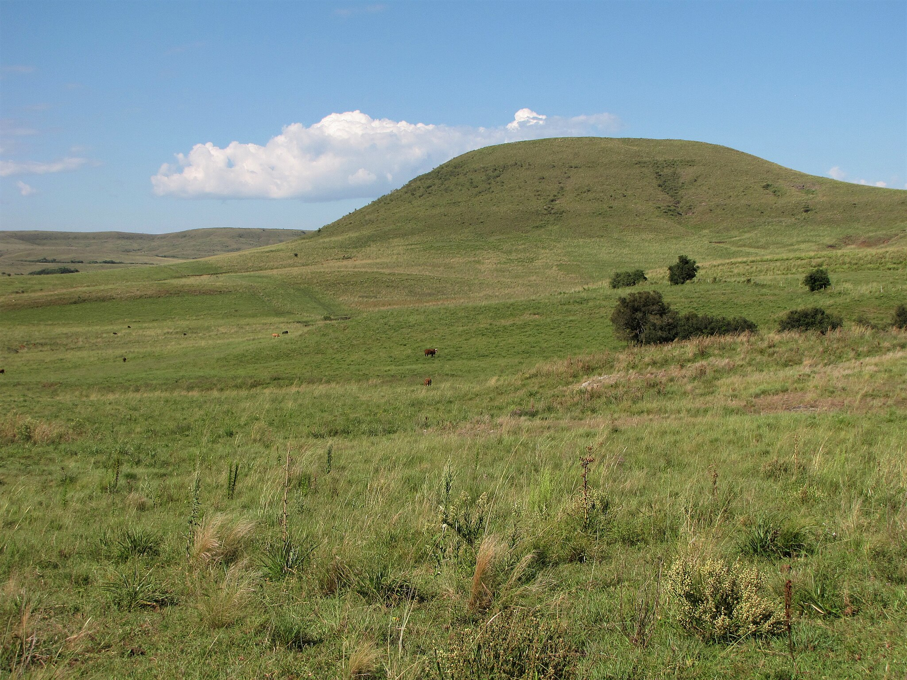
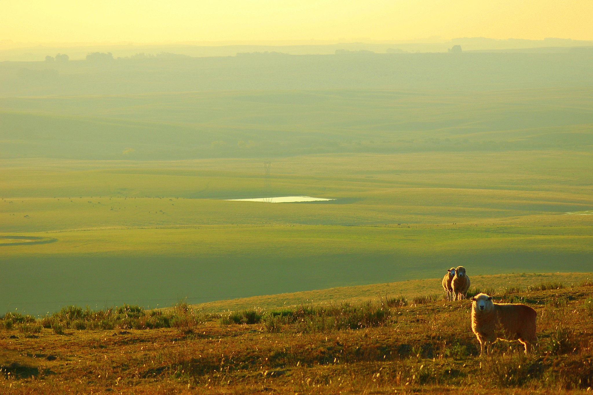
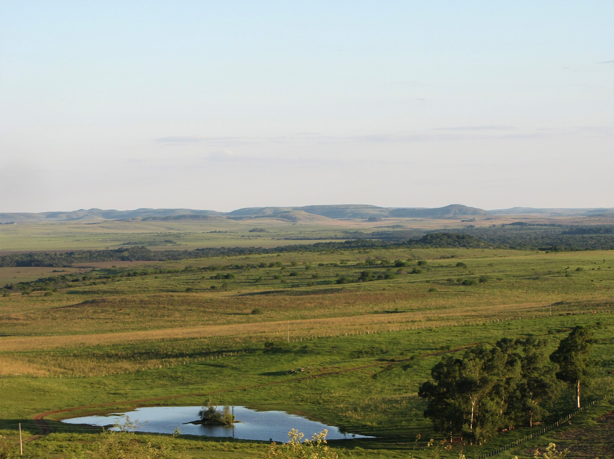

Pampa





INFORMAÇÕES SOBRE O BIOMA
Área Total do Bioma
O Pampa está restrito ao estado do Rio Grande do Sul, onde ocupa uma área de 176.496 km² (IBGE, 2004). Isto corresponde a 63% do território estadual e a 2,07% do território brasileiro.Clima
- Possui um clima tipicamente subtropical.
- Temperatura média: Temperaturas médias entre 13 °C e 17 °C.
- Precipitação: Precipitação anual de em média 1.200 mm.
Relevo
- O Pampa recobre terrenos, em sua maioria, planos ou suavemente ondulados que caracterizam, ao menos, quatro domínios geomorfológicos distintos do relevo sul-rio-grandense.
Hidrografia
- O bioma possui uma rede hidrográfica considerável, formada por rios pequenos e médios, possuindo assim uma ampla disponibilidade de água. Essa região é composta por duas bacias hidrográficas de grande importância regional: a Costeira do Sul e a do rio da Prata.
Vegetação
- A vegetação é constituída por espécies herbáceas, com uma grande diversidade de gramíneas, arbustos e árvores de pequeno porte. A paisagem é constituída principalmente por campos naturais, apresentando regiões com matas restritas às margens dos locais onde o relevo é mais acidentado.
Fauna
- A fauna é expressiva, com quase 500 espécies de aves, dentre elas a ema (Rhea americana), o perdigão (Rynchotus rufescens), a perdiz (Nothura maculosa), o quer-quero (Vanellus chilensis), o caminheiro-de-espora (Anthus correndera), o joão-de-barro (Furnarius rufus), o sabiá-do-campo (Mimus saturninus) e o pica-pau do campo (Colaptes campestres). Também ocorrem mais de 100 espécies de mamíferos terrestres, incluindo o veado-campeiro (Ozotoceros bezoarticus), o graxaim (Pseudalopex gymnocercus), o zorrilho (Conepatus chinga), o furão (Galictis cuja), o tatu-mulita (Dasypus hybridus), o preá (Cavia aperea) e várias espécies de tuco-tucos (Ctenomys sp). O Pampa abriga um ecossistema muito rico, com muitas espécies endêmicas tais como: Tuco-tuco (Ctenomys flamarioni), o beija-flor-de-barba-azul (Heliomaster furcifer); o sapinho-de-barriga-vermelha (Melanophryniscus atroluteus) e algumas ameaçadas de extinção tais como: o veado campeiro (Ozotocerus bezoarticus), o cervo-do-pantanal (Blastocerus dichotomus), o caboclinho-de-barriga-verde (Sporophila hypoxantha) e o picapauzinho-chorão (Picoides mixtus).
Visão Geral
- O bioma Pampa é uma região de grande importância ecológica, localizada principalmente no Rio Grande do Sul, Brasil, e que se estende também para o Uruguai e Argentina. Caracteriza-se por uma vasta planície, com clima subtropical e de verões quentes e invernos rigorosos, com poucas chuvas concentradas na primavera e verão. A vegetação predominante do Pampa é a campo limpo, composta por gramíneas, arbustos baixos e algumas árvores esparsas, adaptadas a solos mais ácidos e à constante ação do fogo natural e da pastagem. É uma área rica em biodiversidade, com várias espécies de aves, mamíferos como o lobo-guará e o tatu-bola, além de uma grande variedade de insetos e plantas. O bioma Pampa tem grande importância para a agricultura e pecuária, sendo uma das regiões mais produtivas do Brasil. No entanto, enfrenta ameaças devido à expansão da atividade agrícola, que causa a perda de vegetação nativa e degradação ambiental. A preservação deste bioma é essencial para manter sua biodiversidade e os serviços ecossistêmicos que oferece.
Curiosidades
- Riqueza de Fauna Silvestre - O Pampa abriga uma grande diversidade de espécies animais, incluindo o lobo-guará, o tatu-bola (que é o mascote da Copa do Mundo de 2014 no Brasil) e a onça-parda. Também é uma importante área de migração para aves, como o sabiá, o quero-quero e diversas espécies de aves de rapina.
- Região de Campo Limpo - A vegetação predominante no Pampa é o campo limpo, uma vasta extensão de gramíneas, o que o torna um bioma peculiar comparado a outros biomas brasileiros como a Amazônia ou o Cerrado, que têm maior presença de árvores. Essa vegetação aberta é adaptada ao clima quente e ao fogo natural que ocorre periodicamente.
- Diversidade de Plantas Nativas - O Pampa tem diversas espécies de plantas, como a *Butia capitata*, também conhecida como *butiá*, que é uma palmeira nativa da região e cujos frutos são usados na produção de doces e bebidas tradicionais, como a *butiá liquéur*.
- Solo Ácido e Fertilidade - O solo do bioma Pampa é geralmente ácido e tem uma fertilidade baixa, o que torna a agricultura mais desafiadora. No entanto, a região é excelente para pastagem, o que sustenta uma grande produção de carne e leite, especialmente em áreas como o Rio Grande do Sul.
- Patrimônio Cultural - O Pampa também é um berço cultural, com forte influência da tradição gaucha. A música, dança e culinária típica da região, como o churrasco e o chimarrão, estão profundamente enraizadas nas tradições do bioma.
- Preservação em Áreas Protegidas - Embora grande parte do Pampa tenha sido modificada para a agricultura, ainda existem áreas de preservação, como o Parque Nacional de São Joaquim, que são importantes para a proteção da biodiversidade e da vegetação nativa.
- Fenômeno do "Vento Minuano" - O Pampa é conhecido pelo "vento minuano", um vento frio e forte, comum no inverno. Esse fenômeno é uma característica do clima da região, que pode ter um impacto significativo sobre a fauna e flora, além de ser uma característica cultural importante para as pessoas da região.


Exemplo de Vegetação da Pampa

Exemplo de Vegetação da Pampa

Quero-quero

Veado Campeiro

Ema